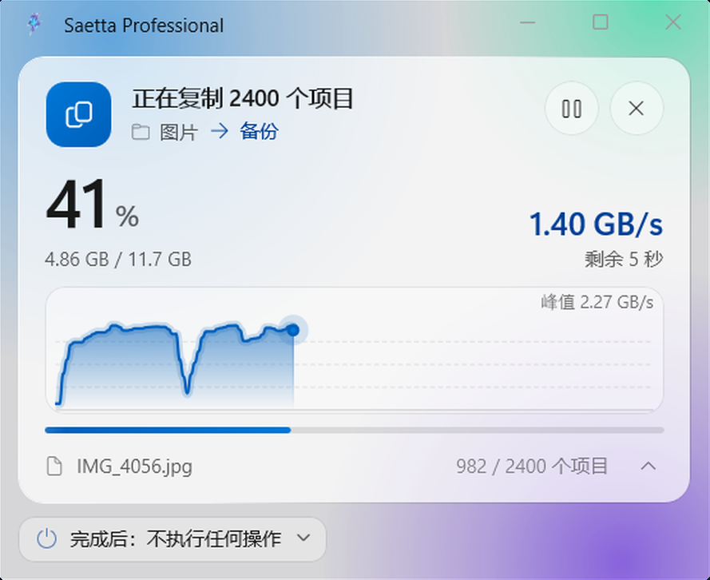
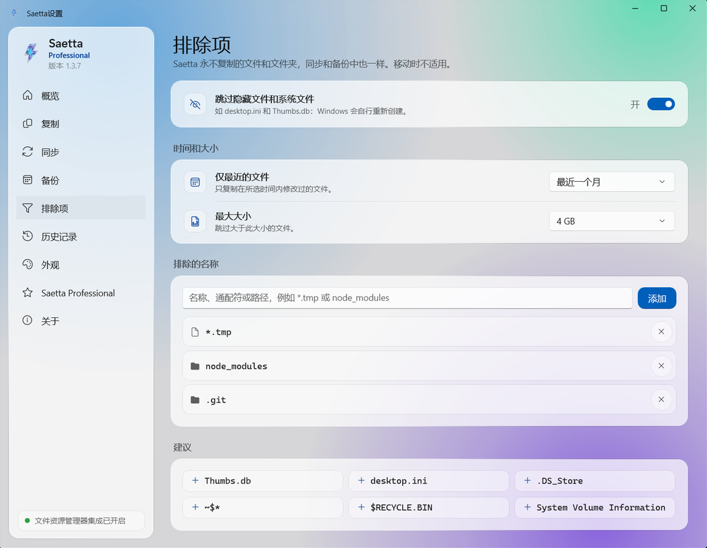

超快复制
文件资源管理器一次复制一个文件。Saetta 可以并行复制文件，并根据存储设备选择复制方式。
24.7×
复制 20,000 个小文件时比文件资源管理器更快：7.7 秒，而不是 3 分 11 秒。
查看基准测试

适用于 Windows 11 和 Windows 10
Saetta 是在文件资源管理器中工作的 Windows 复制程序：复制成千上万个文件的速度最高可快 25 倍，校验每个副本是否与原文件完全相同，并且不会因为一个被锁定的文件而停下。

在 Windows 复制速度慢的操作中，Saetta 会取而代之。你的工作方式不会改变：照常在文件资源管理器中选择文件，复制，然后粘贴。其余的工作由一个从零编写的复制引擎完成。
凭借专用引擎，Saetta 会根据 SSD、机械硬盘、U 盘和 SD 卡的物理特性优化每一次传输。
如果某个文件被锁定，Saetta 不会停下：它会重试，完成队列中的其余文件，并在复制结束时准确告诉你哪些文件没有传输。
每个复制的文件都会从磁盘重新读取并与原文件比对，从而保证完整性。
主要功能，逐一介绍。
文件资源管理器一次复制一个文件。Saetta 可以并行复制文件，并根据存储设备选择复制方式。

Saetta 会出现在 Windows 的右键菜单中。启用集成后，Ctrl+V、拖放文件和 Delete 也会启动 Saetta。
复制完成后，Saetta 会从磁盘重新读取每个文件，用专门的算法计算其指纹，并与原文件的指纹比对。哪怕只有一个字节不同，该文件也会被标出。

按名称、文件类型、大小或日期筛选，精确选择要复制的内容，并自动排除隐藏文件、临时文件或整个文件夹。
带有 PRO 标签的功能需要 Saetta Professional 许可证。
使用自有引擎复制文件和文件夹，速度最高可达文件资源管理器的 25 倍。
对每个复制的文件进行完整性校验。
使用专用的删除引擎，在几秒钟内删除成千上万个文件。
如果文件已存在，你可以选择保留两个版本、替换它或跳过它。
被锁定的文件会连同原因一起报告，并可以单独重新复制。
按名称、类型、日期或大小排除文件和文件夹。
从文件资源管理器的右键菜单复制、移动和删除。如果你愿意，Ctrl+V、拖放文件和 Delete 键也可以交给 Saetta 处理。
复制完成后，Saetta 可以让电脑睡眠、休眠或关机。
每次操作都有记录，包括传输的数据量、用时和平均速度。
BLAKE3、SHA-256、SHA-3、Whirlpool、CRC、TIGER 以及其他许多算法。
如果复制过程中电脑关机，重新开机后 Saetta 会继续这次复制，并检查已复制的文件。
在你需要的时候让两个文件夹保持一致：使用“镜像”，目标会变得与源完全相同；使用“仅添加”，复制新文件和修改过的文件，不删除任何内容。通过预览，你可以先看到哪些内容将被复制和删除。
每天、每周、每月或每年，即使 Saetta 已关闭。如果磁盘未连接，你会收到提醒。
创建和验证 .sha256、.md5、.b3、.sfv 及其他格式的文件。
每个任务结束时，生成一份 HTML 或 CSV 报告，列出每个已复制文件的结果。
在每个任务结束时运行一条命令或一个脚本。
文件删除后不留任何痕迹：任何恢复软件都无法找回它们。
降低复制速度，在你工作时为磁盘或网络留出余量。
我们在同一台电脑上、使用相同的文件测量了三种常见操作，全部在同一块 SSD 上进行。每根条形表示所用时间：越短，操作完成得越早。
64 KB 文件，共 1.3 GB
使用 Saetta 的并行删除引擎
三个 4 GB 文件，例如电影或磁盘映像
用文件资源管理器和 Saetta 进行同样的复制，文件大小各不相同。每根条形下方是两个程序的用时。
笔记本电脑，Intel Core i7-9750H 处理器（6 核），16 GB 内存，2 TB Samsung 990 PRO SSD：源和目标位于同一块 SSD，两个程序使用相同的文件。每项测试对每个程序重复三次：我们展示中间值。时间包括启动 Saetta 以及将数据完整写入磁盘；删除时，两个程序都会永久删除文件，不经过回收站。比赛动画经过加速，但保持了真实的时间比例。
查看完整基准测试Saetta Professional 可直接在应用内通过 Microsoft Store 激活。价格由 Microsoft Store 确定，可能因国家或地区而异。
全速运行和所有基础功能，不限文件数量或大小。
一次购买，无需续费。许可证与你的 Microsoft 账户绑定，在你使用该账户的电脑上均有效。
不会。Saetta 集成在文件资源管理器中并与其协同工作：你可以通过右键菜单使用它，如果愿意，也可以使用 Ctrl+V 和 Delete。
安全。如果你取消操作，未完成的文件会被移除，而要替换的文件在 Saetta 开始写入它们之前保持不变。
不是。它是一次性购买，由 Microsoft Store 管理，并与你的 Microsoft 账户绑定。
Windows 11 和 Windows 10 1809 及更高版本，64 位电脑。